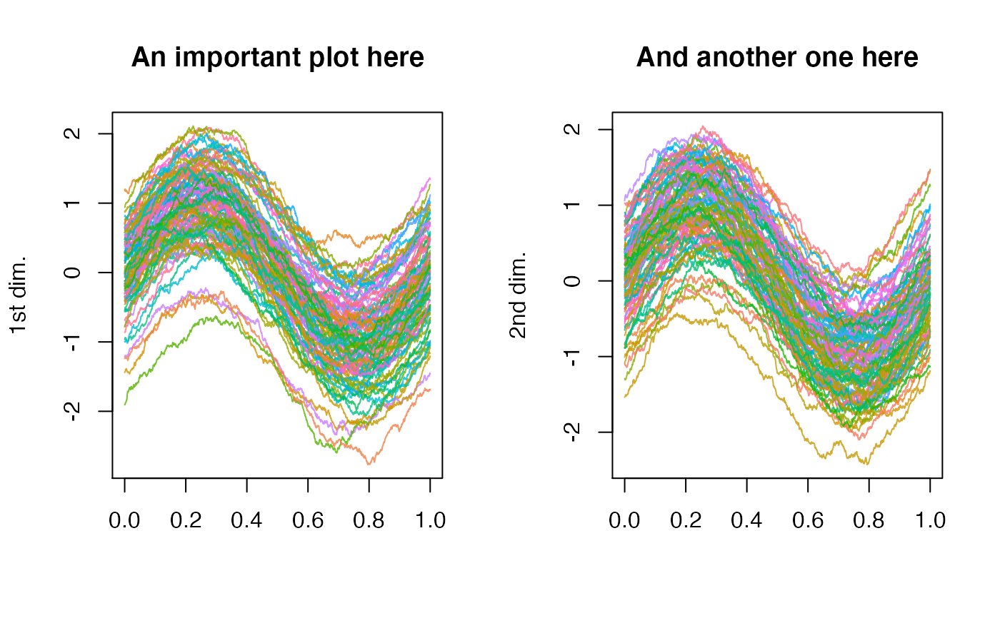

This function performs the plot of a functional multivariate dataset stored
in an object of class mfData. It is able to accept all the usual
customizable graphical parameters, otherwise it will use the default ones.
# S3 method for mfData plot(x, ...)
| x | the multivariate functional dataset in form of |
|---|---|
| ... | additional graphical parameters to be used in plotting functions
(see |
The current active graphical device is split into a number of sub-figures,
each one meant to contain the plot of the corresponding dimension of the
mfData object. In particular, they are arranged in a rectangular
lattice with a number of rows equal to \( \lfloor \sqrt{ L } \rfloor \)
and a number of columns equal to \( \lceil L / \lfloor \sqrt{L} \rfloor
\rceil \).
A special use of the graphical parameters allows to set up y-labels and
titles for all the sub-figures in the graphical window. In particular,
parameters ylab and main can take as argument either a single
string, that are repeatedly used for all the sub-graphics, or a list of
different strings (one for each of the L dimensions) that have to be
used in the corresponding graphic.
N = 1e2 P = 1e3 t0 = 0 t1 = 1 # Defining the measurement grid grid = seq( t0, t1, length.out = P ) # Generating an exponential covariance matrix to be used in the simulation of # the functional datasets (see the related help for details) C = exp_cov_function( grid, alpha = 0.3, beta = 0.4 ) # Simulating the measurements of two univariate functional datasets with # required center and covariance function Data_1 = generate_gauss_fdata( N, centerline = sin( 2 * pi * grid ), Cov = C ) Data_2 = generate_gauss_fdata( N, centerline = sin( 2 * pi * grid ), Cov = C ) # Building the mfData object and plotting tt plot( mfData( grid, list( Data_1, Data_2 ) ), xlab = 'time', ylab = list( '1st dim.', '2nd dim.' ), main = list( 'An important plot here', 'And another one here' ) )#> Warning: graphical parameter "cin" cannot be set#> Warning: graphical parameter "cra" cannot be set#> Warning: graphical parameter "csi" cannot be set#> Warning: graphical parameter "cxy" cannot be set#> Warning: graphical parameter "din" cannot be set#> Warning: graphical parameter "page" cannot be set